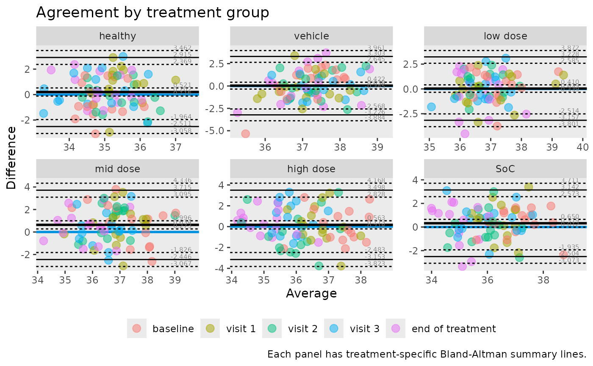

Grouped and stratified Bland-Altman analysis
Source:vignettes/grouped_analysis.Rmd
grouped_analysis.RmdWhy group the analysis?
Agreement can differ across biological or operational
subgroups.ggBA supports grouped summaries and faceted plots to
inspect those patterns.
Build paired data once
tbl <- temperature |>
pivot_wider(names_from = method, values_from = temperature)Grouped statistics by treatment
treatment_stats <- ba_stat(
data = tbl,
var1 = infrared,
var2 = rectal,
group = treatment
)
treatment_stats |>
filter(parameter %in% c("bias", "lloa", "uloa")) |>
tidyr::pivot_wider(names_from = parameter, values_from = value) |>
arrange(treatment) |>
kable(digits = 3)| treatment | n | bias | lloa | uloa |
|---|---|---|---|---|
| healthy | 75 | 0.202 | -2.511 | 2.915 |
| vehicle | 75 | 0.038 | -3.226 | 3.303 |
| low dose | 75 | 0.035 | -3.157 | 3.228 |
| mid dose | 75 | 0.634 | -2.446 | 3.715 |
| high dose | 75 | 0.173 | -3.153 | 3.498 |
| SoC | 75 | 0.319 | -2.504 | 3.142 |
This table highlights subgroup-level shifts in bias and spread.
Faceted Bland-Altman plots
ba_plot(
data = tbl,
var1 = infrared,
var2 = rectal,
group = treatment,
colour = visit,
title = "Agreement by treatment group",
caption = "Each panel has treatment-specific Bland-Altman summary lines."
)
Optional: log-scale grouped analysis
If multiplicative differences are more relevant, add
transform = "log":
ba_stat(
data = tbl,
var1 = infrared,
var2 = rectal,
group = treatment,
transform = "log"
) |>
filter(parameter == "bias") |>
mutate(geom_ratio = exp(value)) |>
select(treatment, geom_ratio) |>
arrange(treatment) |>
kable(digits = 3)| treatment | geom_ratio |
|---|---|
| healthy | 1.006 |
| vehicle | 1.001 |
| low dose | 1.001 |
| mid dose | 1.017 |
| high dose | 1.005 |
| SoC | 1.009 |